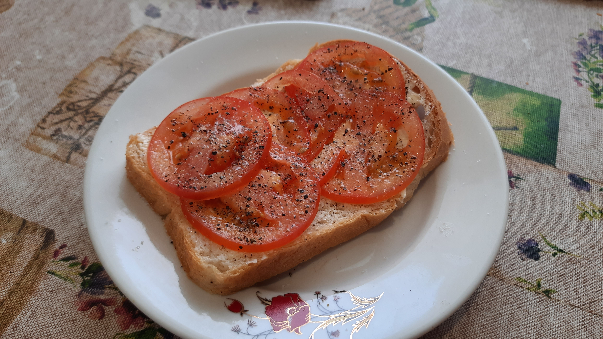

Tomato Sandwich

The Undisputed King of Sandwiches.
Brilliant in its simplicity, resplendant in its supreme balance of flavour.
Many argue that all other sandwiches are a waste of time as the art
of sandwichmaking had already been perfected centuries ago.
Thinly sliced tomato on fresh white bread, smeared with butter. Dusted with
sea salt and freshly ground black pepper. Impeccable.
Ingredients
- Fresh white bread (sourdough preferred)
- Any large, sweet tomato
- Unsalted butter (80% fat minimum)
- Seasalt
- Freshly ground black pepper
Steps
- Slice bread 12mm thick
- Spread butter, edge to edge, on bread
- Thinly (3-4mm) slice tomato
- Arrange tomato on bread, ensuring even coverage
- Sprinkle liberally with salt and pepper
Back to main